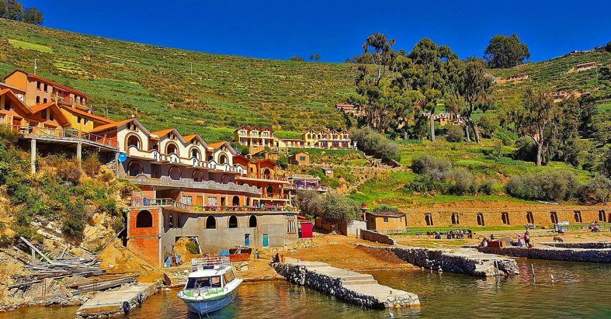
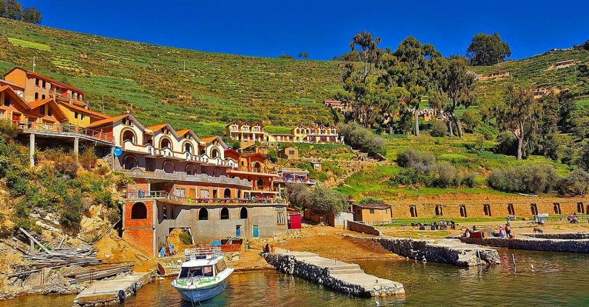
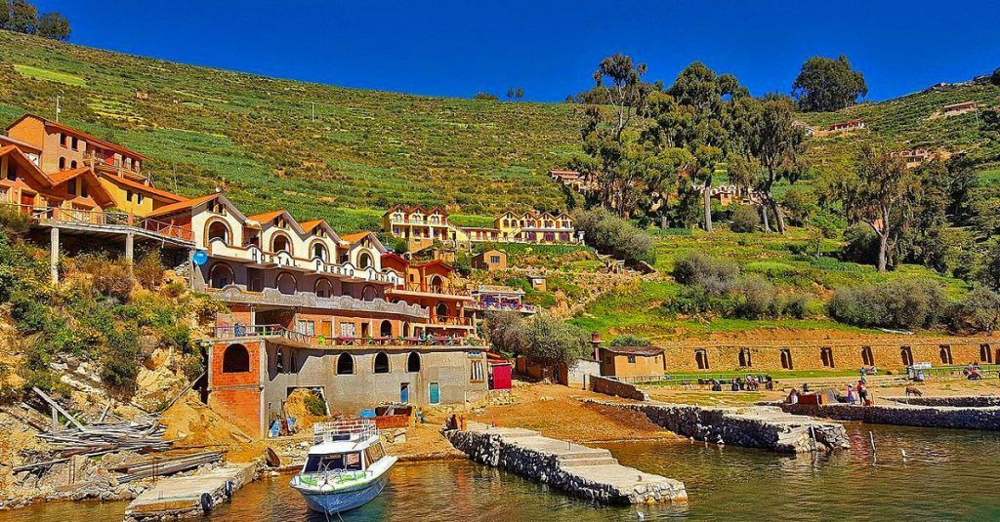

La Paz: excursión de día completo a Copacabana y la isla del Sol

Información general
Cancelación gratuita: Cancela con hasta 48 horas de anticipación y recibe nuestros promociones.
Reservar ahora y pagar después: Planes flexibles: reserva tu plaza de inmediato, y tu hotel preferido sin que se te haga el cargo hoy, con los mejores platos de copacabana y las mejores vitas
Duración: 1 día. Comprueba la disponibilidad para ver los horarios de inicio.
Realiza tu reserva
Reservar ahora y pagar después te permite asegurarte una plaza, sin que se realice ningún cargo hoy.
La Paz: excursión de dos días completo a Coroico y caminos de la muerte
Información general
Cancelación gratuita: Descubre Coroico: El Paraíso Tropical de La Paz
¡Bienvenidos a Coroico! Ubicado en los Yungas de La Paz, Coroico es un destino imperdible para los amantes de la naturaleza, la tranquilidad y la aventura. A solo unas horas de la ciudad de La Paz, este pequeño paraíso ofrece un clima cálido, paisajes impresionantes y una mezcla única entre selva y montaña.
Coroico te invita a desconectarte de la rutina y sumergirte en una experiencia inolvidable:
Y una cultura viva que se siente en cada rincón del pueblo.
Reservar ahora y pagar después: Ya sea que busques relajarte en un hotel con vista panorámica o aventurarte en la famosa Ruta de la Muerte en bicicleta, Coroico tiene algo especial para ti.
Duración: Descubre nuestras mejores ofertas en hospedaje, tours guiados, transporte privado y paquetes todo incluido.
Atención personalizada
Confirmación inmediata
Soporte local
¡Coroico te espera con los brazos abiertos!
Realiza tu reserva
La Paz: valle de la luna a 15Km
Información general
¿Donde esta ubicada? Ubicado a tan solo 10 kilómetros del centro de La Paz, el Valle de la Luna es una maravilla geológica que te transportará a otro mundo. Formado por la erosión del viento y el agua sobre suelos arcillosos, este valle presenta formaciones únicas que asemejan un paisaje lunar. Su nombre fue otorgado por el astronauta Neil Armstrong en 1969, quien al visitarlo, lo comparó con la superficie de la luna.
¿Qué Puedes Hacer en el Valle de la Luna?Senderismo y Exploración: Recorre sus senderos que te llevarán al corazón del valle, donde podrás admirar formaciones como “El Buen Abuelo”, “Salto de la Vizcacha” y “Sombrero de la Dama”. Observación de Flora y Fauna: Descubre más de 32 especies de cactus nativos en el Cactario, y observa lagartijas y vizcachas, típicas de la fauna andina.
Cómo Llegar El Valle de la Luna se encuentra en el macrodistrito de Mallasa, al sur de La Paz. Puedes acceder en taxi, microbús o transporte privado. La entrada tiene un costo de Bs. 3 para nacionales y Bs. 15 para extranjeros.
Realiza tu reserva
Reservar ahora y pagar después te permite asegurarte una plaza, sin que se realice ningún cargo hoy.
 
